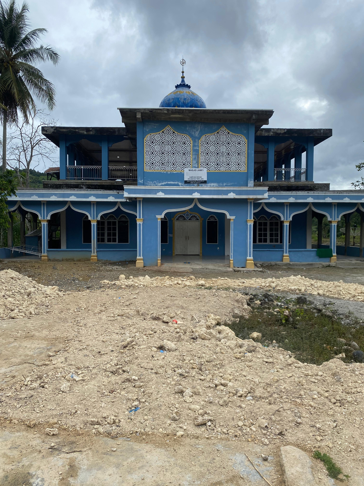

Letak Geografis
Desa Rerebe merupakan salah satu desa yang terletak di Kecamatan Tripe Jaya, Kabupaten Gayo Lues, Provinsi Aceh. Secara geografis, desa ini berada di wilayah pegunungan bagian tengah Aceh yang dikenal dengan bentang alamnya yang asri dan udara yang sejuk. Desa Rerebe dikelilingi oleh perbukitan dan hutan tropis yang masih alami, menjadikannya memiliki potensi sumber daya alam yang cukup melimpah.
Akses menuju Desa Rerebe umumnya melalui jalan darat dari kabupaten Blangkejren, dan meskipun jalannya masih terbatas, namun tetap dapat dilalui oleh kendaraan roda dua maupun roda empat. Keberadaan desa ini memberikan kontribusi penting terhadap ketahanan lingkungan dan kearifan lokal masyarakat Gayo Lues.
| Batas Utara | : | Kawasan Hutan Kecamatan Pantan Cuaca |
| Batas Selatan | : | Kecamatan Terangun |
| Batas Timur | : | Desa Kuala Jernih |
| Batas Barat | : | Desa Trans Paya Kumer |

Sejarah Singkat

Desa Rerebe berasal dari kata dalam bahasa Gayo, yaitu "Rebe," yang berarti kayu yang tidak terbakar meskipun disulut api. Nama ini berkaitan dengan kondisi wilayah desa yang memiliki sumber air melimpah, termasuk aliran air terjun yang terus mengalir tanpa henti. Keberadaan air terjun tersebut dimanfaatkan oleh masyarakat setempat sebagai objek wisata alam. Seiring berjalannya waktu, kawasan wisata ini kemudian diserahkan kepada pemerintah untuk dikelola sebagai salah satu destinasi pariwisata di Kabupaten Gayo Lues.
Infrastruktur Desa
Masjid
Di desa Rerebe terdapat sebuah masjid bernama masjid Baiturrahman
Sekolah Dasar
Di desa Rerebe terdapat sekolah dasar yaitu SDN 1 Tripe Jaya
Meunasah
Di desa Rerebe terdapat meunasah yang biasa digunakan untuk posyandu dan acara tertentu
Pos Polsek
Di desa Rerebe terdapat pos polsek yang bertugas mengamankan desa Rerebe
Poskesdes
Di desa Rerebe terdapat sebuah pos kesehatan desa sebagai tempat berobat warga
Pesantren
Di desa Rerebe terdapat sebuah pesantren Darul Amilin sebagai mengaji anak - anak desa Rerebe
Kantor Desa
Di desa Rerebe terdapat kantor desa sebagai tempat kerja perangkat desa dan tempat warga melapor
Puskesmas
Puskesmas sebenarnya terletak di desa Buntul Musara tetapi nama puskesmasnya adalah puskesmas desa Rerebe
Jumlah KK / Dusun
| No | Nama Dusun | Jumlah KK |
|---|---|---|
| 1 | Pangsabe | 51 |
| 2 | Umah Ayu | 42 |
| 3 | Aun Beringin | 42 |
| 4 | Aih Terjun | 53 |
| 5 | Kepies Mude | 34 |
| 6 | Aih Tenang | 34 |
| 7 | Umah Deret | 51 |